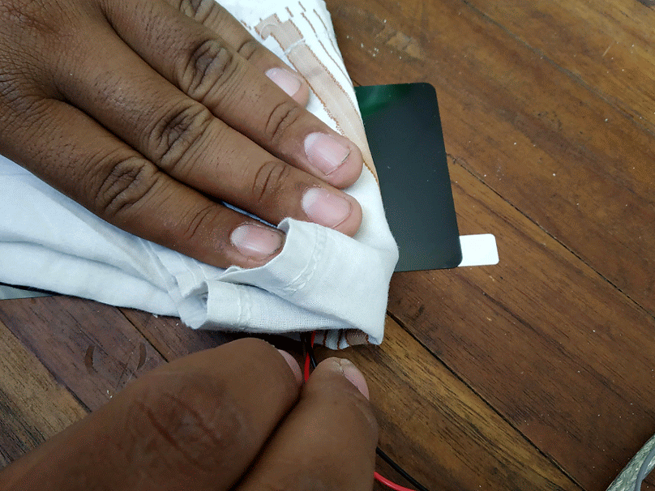
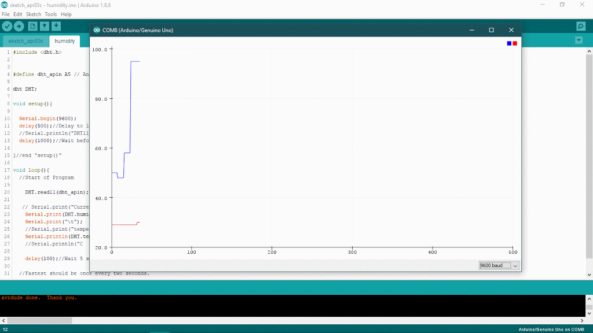
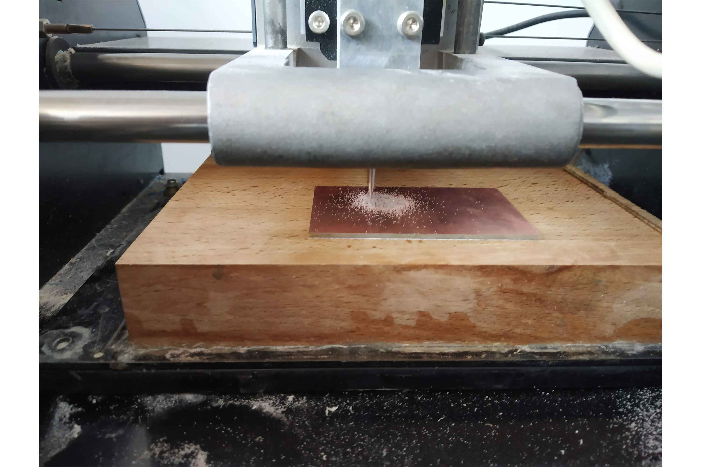
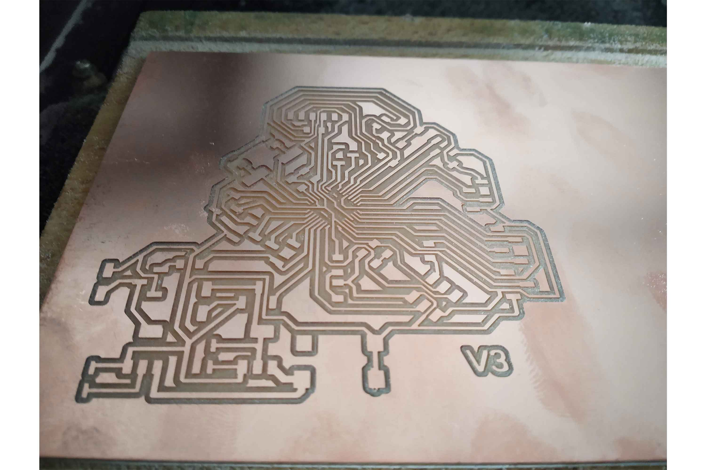
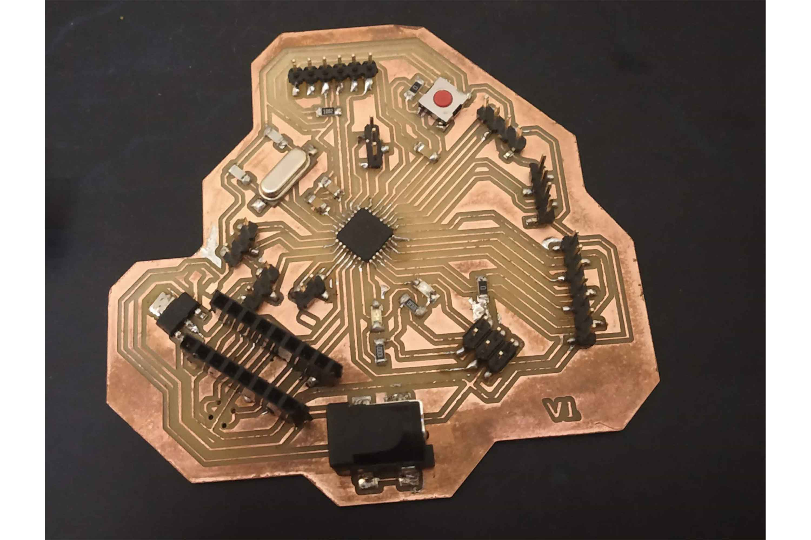
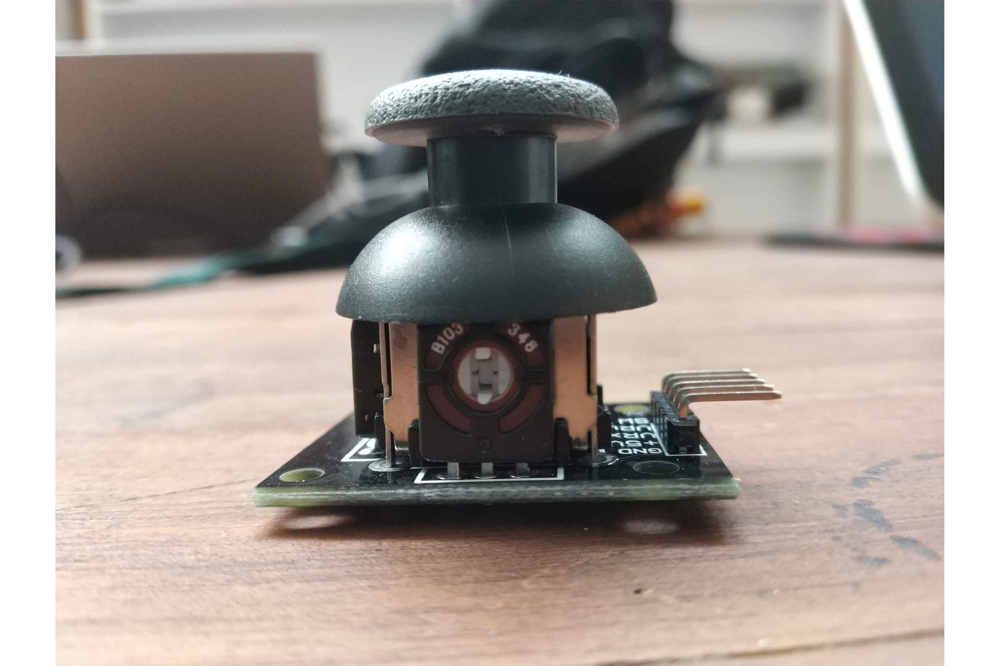

Week 11 : Assignment
- measure something: add a sensor to a microcontroller board that you have designed and read it
So this week we are going to use input devices, input devices as the name suggests used to take Data from the User, unlike output devices which will be used to Give something in Action to the user.
I tried 3 Sensors for Input device week.
- Humidity sensor - to take measurement of Temperature and Humidity of surrounding
- Ultrasonic Sensor - To take measurements of Distance
- Joystick - for give input in X and Y position
Humidity sensor
A humidity sensor (or hygrometer) senses, measures, and reports both moisture and air temperature. The ratio of moisture in the air to the highest amount of moisture at a particular air temperature is called
relative humidity. Relative humidity becomes an important factor when looking for comfort.
I try to work with a humidity sensor with my week 9 board. I have connected my echo hello board with the FTDI
serial port and my humidity sensor is connected to miso pin of the header which is an analog pin of the microcontroller. I am sending data through FTDI cable using a TTL convertor.
First I program my board, I used header pins for that,
initially, I used header pins to program my board and then I used them as I/O pins, (I used miso as i/o pin) Analog
read command. you can see the programming of echo hello board in week 9.

Code for humidity Sensor.
Click here to get the original file. Click here to get DHT library Code is explained in the comments.
/* this code will help you get the data of temperatures and humidity on serial monitor*/
#include <dht.h>
// dht library for humidity sensor
#define dht_apin A5 // Analog Pin sensor is connected to
dht DHT;
void setup(){
Serial.begin(9600);
delay(500);//Delay to let system boot
Serial.println("DHT11 Humidity & temperature Sensor\n\n");
delay(1000);//Wait before accessing Sensor
}//end "setup()"
void loop(){
//Start of Program
DHT.read11(dht_apin); // reading values from DHT sensor
Serial.print("Current humidity = ");
Serial.print(DHT.humidity); // VALUES WILL BE PRINTED
Serial.print("% ");
Serial.print("temperature = ");
Serial.print(DHT.temperature);
Serial.println("C ");
delay(5000);//Wait 5 seconds before accessing sensor again.
//Fastest should be once every two seconds.
}// end loop

I used wet handkerchief to change humidity of sensor
Tempreture and humidity in Serial monitor
you can find serial monitor on tools Tools on the menu bar of Arduino-ide. This feature can help us to find whether the Board is can communicate with pc or not and help us to keep track of data. here I am using a serial monitor to print the data onboard, so I can get real-time updates, but another good Feature is a Serial plotter, which represents the data in graphically, it helps to find out the relative change between values in time intervals. you can find serial plotter on the tools menu.

Tempreture and humidity in plotter
Here the blue line is the humidity line, which continuously changing when because we are surrounding it a wet handkerchief. but temperatures variations are not as quick as humidity.
Ultrasonic sensor
I tried ultrasonic sensor to use distance as a parameter. If something is Under 50 cm range led will start blinking. If one using ultrasonic sensor, they may have to download library for that. you
can download library from here.
download in Zip file and then include it in IDE. you have to use these libraries to operate the sensor properly. (my board was not detecting sensor until I include library).

Code
Click Here is the code. Click to get original files.
Here I used pin (0,1) (Arduino pins) or PA1 and PA0 of echo hello board as communication pins ( TX, RX ) and A5(5) and A4(4) for the trigger pin and echo pin
of ultrasonic.

/* this code will help to print the distance from the data to serial monitor, readings will be taken by ultrasonic sensor*/
#include <Ultrasonic.h>
// ULTRASONIC LIBRARY
#include <SoftwareSerial.h>
// include SOFTWERE SERIAL library above, with software serial any two I/O pins can be run as Rx, Tx
SoftwareSerial mySerial(0, 1); // RX, TX // to send and receive the data to serial port(Monitor)
Ultrasonic ultrasonic(A5, A4); // ultrasonic pins defined ( triger(5) and echo(4)), echo pin will send sound waves and triger will receive sound signals
int distance; // defining variable
void setup()
{
pinMode(2,OUTPUT);
mySerial.begin(9600);
}
void loop() {
// Pass INC as a parameter to get the distance in inches
distance = ultrasonic.read(); // reading values
mySerial.print("Distance in CM: ");
mySerial.println(distance); // printing distance on serial
delay(1000);
// if else condition, if condition is fulfilled then, led will High, if no it will be low.
if(distance <= 50)
{
digitalWrite(2,HIGH);
}
else
{
digitalWrite(2,LOW);
}
}
Final project Board
This week I also started designing my final project board. I was going to use an ATmega328p microcontroller for my final project. it is a very powerful microcontroller with 32 kb Flash memory, much more than ATtiny44 which Constrains only 4 kb of ISP Flash memory. you can read about these terms in week9. besides memory, I found many things that bring my interest in ATmega328p.
Programming and communication flexibility:
1-UART (Universal Asynchronous receiver and Transceiver) programming, 2-SPi(serial Peripheral interface), 1-I2c communication
I/O ports - 32 general purpose pins (Working registers)
Internal clock - 8Mhz
CPU speed - 20 MIPS
PWM pins - 6
Programming and communication flexibility :
the key thing I want to shift to the ATTin328p is increasing programming flexibility of mine, back at Attiny44 I used only serial interface with FABtinyisp which was pretty good but the way I am understanding this thing I think, every time I have to carry fab isp
when I am programming I will not have cable(UART) like Arduino Uno
I can have that type of flexibility with ATmega328p, reason I can't use this UART ports directly is ATTIny is not supporting UART Programming directly or built-in. Attiny 44 needs will need a serial interface that can talk to the master or
program if the user wants to program it with UART. but These microcontrollers do not have Hardware serial support, no (Tx, Rx) built-in, Software Serial
may help but in most of the cases when I tried to use that on input week it was causing memory issue, One can get the data from Attiny44 using Neil's bit banging code. Click here for Code links
thought this is based on my experience and people which help me to understand these things, maybe some special methods that can solve this problem
I/O ports - 32 general purpose pins(Working registers)
In the final project, I will probably use 3 or 4 Input/output sensors or may need to communicate with other boards, for these things 328p will be great.
Final Board Design
Yet my final board mechanism was not sorted out I was confused about servo and Dc motors which one I should use in the final project. but we had many Dc motors at labs so I thought using dc for initial testing will be a good idea, so I decided to use L293d Drivers. and prepared my schematic in EAGLE. you can see PCB making in detail in WEEk 7.
Schematic

Requirements
one 10k pullup resistors - one at Reset and Vcc for keeping reset pin High
three 100nf Filter Capacitors - two At pin number 4 an 5 (Vccs) of microcontroller and one between DTR(RTS) and Reset (of FTDI pins).
one 16MHz external crystal - between XTAL1 and XTAL2
TWO 22 pf - for two ground pins of crystal
two 499 resistor - for leds (Power,SCk)
ISP, UART, i2c header pins - For programming and communication
i/O pins
Ultrasonic sensor
Motor Driver L2393D
LCD Module Pins
Extra pins - I tried to use all the pins of microcontroller in case if I needed extra ones
Board

Milling And Soldering
One can know more about the milling and soldering process in Week5.
  
Programming
I kept the L293D part unsolder for now! it was not available at the lab, I have to buy that.

Joystick as input Device
In the 328p board, I tried to get data from the joystick module. I will get positions on the X-axis, Y-axis, and Switch.
Connections
I connected the x and y-axis pins to analog pins and switch to digital pins.
Vrx : A0
VRy : A1
SW : 8

Code
The below code will help to get the data from the joystick module of the X and Y axis and Switch. with code require explanation is given.
/* this code will help to get the x and y axis data from joystick, I have maped the readings in specific region
int VRx = A0; // variable VRx for x direction readings
int VRy = A1; // variable for VRy direction readings
int SW = 8; // for switch
// initialy kept zero
int xPosition = 0;
int yPosition = 0;
int SW_state = 0;
int mapX = 0;
int mapY = 0;
void setup() {
Serial.begin(9600);
pinMode(VRx, INPUT);
pinMode(VRy, INPUT);
pinMode(SW, INPUT_PULLUP);
}
void loop() {
xPosition = analogRead(VRx);
yPosition = analogRead(VRy);
SW_state = digitalRead(SW);
// map function helps to change the analog read values in desirable way
// in default it will give values between 0 and 1023, but for joystick I may prefer values between the (-512,512),
// it helps me to convert the range
// example
// mapX = map(variable,fromlower,fromhigh, tolower, tohigh)
// 0 converted into -512
// 1023 converted into 512
mapX = map(xPosition, 0, 1023, -512, 512);
mapY = map(yPosition, 0, 1023, -512, 512);
// for printing the values in serial
Serial.print("X: ");
Serial.print(mapX);
Serial.print(" | Y: ");
Serial.print(mapY);
Serial.print(" | Button: ");
Serial.println(SW_state);
delay(100);
}
In Arduino ide
Below is code I am going to run through Arduino-ide. you can check week9 to know how to program with arduino-ide.
Visit week 7 and week 5 for more information about IDE.
Reading the Data
Group work
our group work was to Probing Sensor Data with an Oscilloscope, we tried Quadrature Encoders. In this group work, there was not much to separate so we did it together.
we tried to probe the Quadrature Encoders with Oscilloscope. so there are two channels in the Oscilloscope and bot connected with encodes output, encodes generates square pulses, in both channels pulses will be generated and it can be seen in
the display of Oscilloscope.
Click here to redirect on group work.
Conclusion
This week all I do is exploring the different sensors and try to understand their working, I milled a new 328p board, got to know more about communications in 328p board which I will explore more ahead!